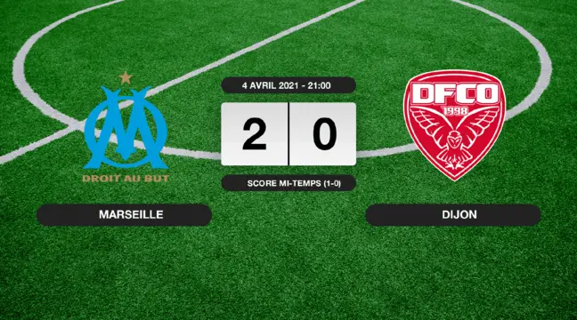
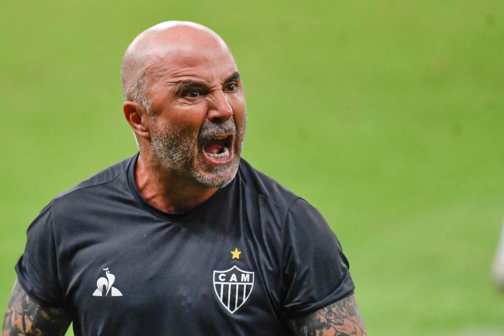
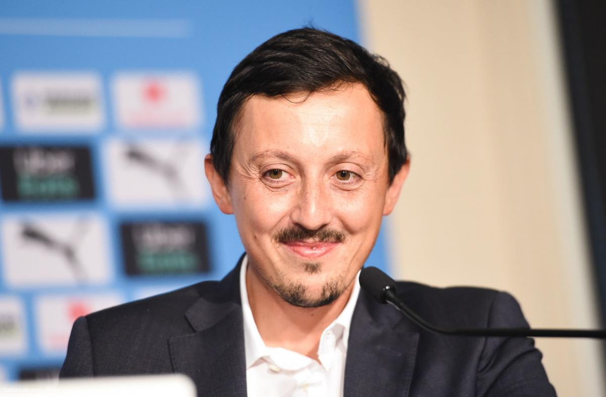

Résultat du dernier match de l'OM

Nouveau coach de l’OM , Jorge Sampaoli a atterri en fin de matinée, mardi 2 mars 2021, à l’aéroport de Marignane. L’Argentin arrive du Brésil, où il dirigeait jusqu’à la semaine dernière l’Atlético Mineiro.
« Je suis très heureux d’être ici. J’arrive à Marseille avec beaucoup d’espoir et d’attentes, dans un club que je suis depuis longtemps. J’ai hâte de commencer » a-t-il déclaré dans une vidéo diffusée dans la soirée par le club provençal.

Directeur sportif de l'OM depuis l'été dernier, Pablo Longoria a rapidement été projeté sur le devant de la scène par Frank McCourt, qui n'a pas hésité à offrir le rôle de président du club à l'Espagnol. Sur RMC Sport, le dirigeant de 34 ans est revenu sur cet épisode.
« C'était une nouvelle à laquelle je ne m'attendais pas. C'est une succession d'évènements, et on m'a demandé. Dans toutes les choses que j'ai faites, j'ai beaucoup d'ambition, j'ai eu de la réussite et je me suis posé la question de savoir si j'étais préparé ou non pour prendre cette responsabilité. Je me suis dit que j'étais préparé. Je connais le club, même depuis six mois. Alors, pourquoi pas ? » a répondu l'Espagnol. Ambitieux.